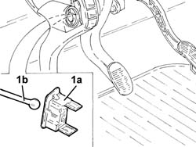
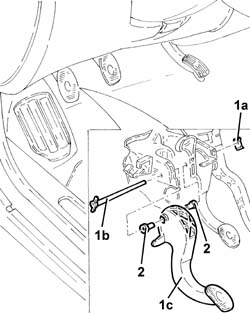

3330B26 clutch pedal - r+r
- Path
- Procedures > 33 BRAKING SYSTEM > 3330 HYDRAULIC BRAKING SYSTEM > 3330B pedal unit > 3330B26 clutch pedal - r+r
- Kind
- repair procedure (removal / refitting; the operation number is the code)
- Applies to
- all engines; all production periods
- Interactive page
- https://sloeber94.github.io/elrnDB-a147/en/#/3025226
Applies to: all engines; all production periods
 Removing
Removing
 Refitting
RefittingEnsure that the ignition key is in the OFF position, then disconnect the negative battery terminal (-).
 | Name | Connector |
|---|---|---|
- | Battery |
Applies to: engines: 1.6 TS, 2.0 TS, 3.2 V6; all production periods
Proceed with removal 1056B78 SWITCH on CLUTCH PEDAL - R.R. .
Applies to: engines: 1.9 JTD 8V, 1.9 JTD 16V; all production periods
Proceed with removal 1060G42 .
Applies to: engines: 1.9 JTD 8V, 1.9 JTD 16V; all production periods
1. Remove the clip (1a) and release the rod (1b) for the clutch master cylinder from the pedal.

Applies to: engines: 1.9 JTD 8V, 1.9 JTD 16V; all production periods
1. Remove the stop clip (1a), withdraw the pin (1b) and remove the clutch pedal (1c).
2. Keep the bushes.

Applies to: all engines; all production periods
Refitting
RemovingPlace the clutch pedal, complete with bushes, back in its housing and secure it to the brake pedal using the pin and the stop clip.
Connect the rod for the clutch master cylinder to the pedal and secure it using the clip.
Applies to: engines: 1.9 JTD 8V, 1.9 JTD 16V; all production periods
Proceed with refitting 1060G42 .
Applies to: engines: 1.6 TS, 2.0 TS, 3.2 V6; all production periods
Proceed with refitting 1056B78 SWITCH on CLUTCH PEDAL - R.R. .
Applies to: engines: 1.6 TS, 2.0 TS, 3.2 V6; all production periods
Connect the negative (-) battery terminal.